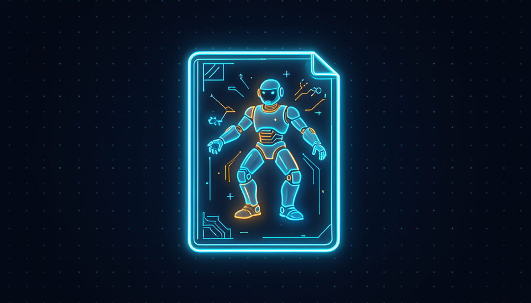

💡 Novo aqui? Três palavras antes de começar
- Skill — uma receita escrita: o passo a passo que a IA segue toda vez que você pede aquela tarefa.
- Gatilho — a frase ou situação que faz a skill "ligar" (ex.: "resuma esta reunião").
- Instruções — os passos em português que dizem à IA exatamente como fazer e como saber que ficou bom.
🤔 Quando criar uma skill
Você não cria uma skill pra tudo. A regra é simples: se você faz a mesma coisa de novo e de novo — e toda vez precisa reexplicar pra IA o jeito certo — esse é o sinal. A skill guarda esse "jeito certo" pra você não repetir a explicação nunca mais.
Pense em algo que você repete toda semana: resumir uma reunião do mesmo formato, responder o mesmo tipo de e-mail, montar o mesmo relatório. Cada uma dessas tarefas é uma candidata a virar skill. Tarefas que você faz uma vez só, não — pra essas, é só pedir direto.
🔑 A ideia central
Skill é como ensinar uma receita pra um cozinheiro novo uma vez:
- •Sem skill: toda vez você explica do zero como quer o bolo. Cansa e sai diferente.
- •Com skill: a receita fica anotada. Você só diz "faz o bolo" e sai sempre igual.
✓ Vale virar skill
- ✓Você repete a tarefa toda semana
- ✓Tem um "jeito certo" que você sempre explica
- ✓O resultado precisa sair padronizado
- ✓Outras pessoas fariam a mesma coisa
✗ Não compensa
- ✗É uma tarefa única, sem repetição
- ✗Cada caso é totalmente diferente
- ✗Você ainda não sabe qual é o "jeito certo"
- ✗Um pedido direto já resolve
Conceitos-chave
🧬 Anatomia de uma skill: gatilho + instruções
Toda skill tem só duas partes, e nenhuma delas precisa de código. A primeira é o gatilho: QUANDO essa skill deve entrar em ação. A segunda são as instruções: COMO fazer, passo a passo, e como saber que ficou bom.
É a mesma lógica de uma placa na cozinha: "quando chegar pedido de bolo (gatilho), siga estes passos (instruções)". Quanto mais claro o gatilho, mais a IA acerta na hora de decidir usar a skill. Quanto mais claras as instruções, mais o resultado sai do jeito que você quer.
🧪 O que uma boa instrução tem
- •Objetivo — uma frase dizendo o que a skill entrega.
- •Passos numerados — a ordem exata, sem pular etapa.
- •Partes variáveis — o que muda a cada uso, marcado com < >.
- •Como verificar — como saber, no fim, que deu certo.
💡 Dica prática
Escreva a skill como se estivesse deixando um bilhete pra um estagiário esperto, mas novo no assunto. Ele é capaz — mas só faz certo o que estiver escrito. Se você não escreveria num bilhete, não deixe pra IA adivinhar.
Conceitos-chave
✍️ Sua primeira skill em linguagem simples
Chega de teoria — vamos escrever uma de verdade. Você não vai programar nada: vai escrever um texto de instruções em português e colar no Claude. Esse texto é a skill. Abaixo está um exemplo completo e real, pronto pra usar: uma skill que transforma a bagunça de anotações de uma reunião num resumo organizado.
Repare nas três coisas que toda boa skill carrega: o objetivo no topo, as partes variáveis marcadas com < > (o que muda a cada uso) e a verificação no fim. Copie, troque os trechos entre < > e veja a mágica.
🧪 Skill pronta pra colar (5 minutos)
Objetivo: ter um resumo de reunião sempre no mesmo formato. Cole o texto abaixo no Claude (ou ChatGPT), trocando os trechos entre < >, e mande junto suas anotações.
SKILL: Resumo de reunião OBJETIVO: transformar minhas anotações soltas de uma reunião em um resumo curto, padronizado e fácil de repassar. QUANDO USAR (gatilho): sempre que eu disser "resuma esta reunião" e colar minhas anotações. PASSOS: 1. Leia as anotações de <cole aqui suas anotações da reunião>. 2. Escreva no máximo 5 linhas de "Decisões tomadas". 3. Liste as "Tarefas", cada uma no formato: - [responsável] o que fazer — até <prazo>. 4. Aponte em "Pendências" o que ficou sem resposta. 5. Use o tom <formal ou informal> e escreva em português. NÃO FAÇA: não invente decisões que não estão nas anotações; se algo estiver vago, marque com "(confirmar)". COMO VERIFICAR (deu certo se): - O resumo cabe em uma tela, sem enrolação. - Toda tarefa tem responsável E prazo. - Nada foi inventado além do que estava nas anotações.
Como saber que deu certo: o resultado deve ter as três seções (Decisões, Tarefas, Pendências), toda tarefa com responsável e prazo, e nada inventado. Se faltar algo, é hora do tópico 4 — testar e ajustar.
💡 Dica prática
Comece pela skill mais chata da sua semana — não pela mais legal. A dor de uma tarefa repetitiva é o melhor combustível, e você vai querer rodar a skill toda hora, o que ajuda a lapidá-la rápido.
Conceitos-chave
🧪 Testar e ajustar
Nenhuma skill nasce pronta. A primeira versão quase sempre erra em algum detalhe — esquece um prazo, fica longa demais, muda o tom. Isso é normal e é justamente o ciclo do trabalho: rodar, ver onde errou e corrigir a instrução exata que causou o erro.
O segredo é não jogar a skill fora quando ela erra. Em vez disso, pergunte: "que linha das minhas instruções deixou isso ambíguo?" e conserte só aquela linha. Cada ajuste deixa a skill mais afiada — e ela passa a errar menos a cada rodada.
▶️ Rode com um caso real
Use uma reunião de verdade, não um exemplo perfeito. O erro só aparece no caso real.
🔍 Compare com o "como verificar"
Pegue a sua checagem do tópico 3 e confira ponto a ponto o que saiu.
✏️ Conserte a linha culpada
Achou o erro? Reescreva só a instrução que o causou — mais específica, mais clara.
🔁 Repita até confiar 2 ou 3 voltas
Em geral, duas ou três rodadas já deixam a skill boa o bastante pra usar sem medo.
🎯 O padrão pra notar
Cada erro é uma instrução faltando. Quando a skill "não obedeceu", quase sempre o problema é que você não escreveu aquilo — você só tinha na cabeça. Escrever resolve.
Conceitos-chave
♻️ Reusar e compartilhar
Depois que a skill funciona, ela vira um ativo seu — algo que você escreveu uma vez e que rende pra sempre. Guarde o texto num lugar fácil de achar (um bloco de notas, um documento, uma pasta de skills) pra colar quando precisar, sem reescrever.
E o melhor: skill é fácil de passar adiante. Como é só texto em português, você manda pra um colega e ele já usa. Uma boa skill compartilhada padroniza o time inteiro — todo mundo entrega no mesmo formato, com a mesma qualidade.
✓ Hábitos que rendem
- ✓Guardar cada skill num arquivo só dela
- ✓Dar um nome claro ("Resumo de reunião")
- ✓Anotar a data e o que mudou na última versão
- ✓Compartilhar a melhor versão com o time
✗ O que faz a skill se perder
- ✗Deixar solta no meio de uma conversa antiga
- ✗Reescrever do zero toda vez
- ✗Manter várias versões sem saber qual é a boa
- ✗Guardar dados sensíveis dentro do texto
📊 Por que isso importa
- •Uma skill escrita 1 vez pode ser usada centenas de vezes.
- •Compartilhada, ela multiplica: 1 skill × 10 colegas = 10× o efeito.
- •O time todo passa a entregar no mesmo padrão, sem retrabalho.
Tradução: o trabalho de escrever a skill se paga já na segunda vez que você (ou um colega) a usa.
Conceitos-chave
📚 Skills que todos deveriam ter
Pra você não começar do zero, aqui vai um starter kit: quatro skills que servem pra quase qualquer pessoa. Comece por uma delas — a que mais combina com a sua semana — e use o que aprendeu nos tópicos anteriores pra adaptar ao seu jeito.

💡 Dica prática
Não crie as quatro de uma vez. Escolha uma, use por uma semana inteira, lapide até confiar — e só então parta pra próxima. Skill boa é hábito, não coleção.
✋ Antes de seguir — quais são as duas partes que toda skill tem?
🎓 Resumo do módulo
Próximo módulo:
2.3 — 🔌 Conectando o mundo: ligue a IA aos seus apps (MCP) e deixe tarefas acontecerem sozinhas.